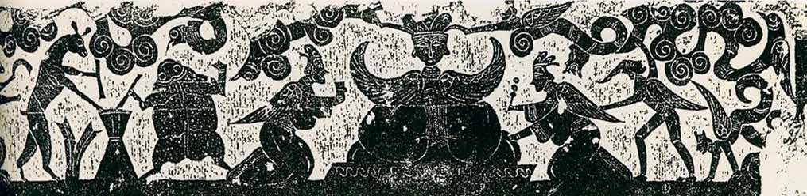
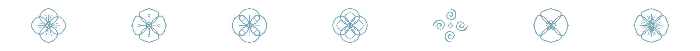
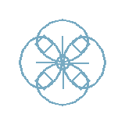

为什么西王母出场时，
总有诸多角色固定搭配？

西王母居中 · 玉兔、蟾蜍捣药于左 · 羽人侍立于右 —— 山东嘉祥宋山小石祠西壁 · 东汉
汉人相信人死之后灵魂不灭，可以飞升天界。西王母掌不死之药、居昆仑之巅，是这趟旅程的终点。她身边每个形象都各管一件事：玉兔、蟾蜍捣制不死之药，三足乌驮日传信，九尾狐主祥瑞，羽人生双翼、专为灵魂引路——凑在一起，就是一套完整的“升仙配置”。李凇把这种正面端坐的四川系布局称为“偶像式构图”，以别于中原的情节式。
把这套班子画进墓室、棺椁和祠堂，等于给墓主备下一张“引魂升仙路线图”。巫鸿《武梁祠》指出：汉代祠堂里屋顶归祥瑞、山墙归仙界、墙壁归历史——西王母一系独占山墙尖顶，自成一层天。东汉厚葬成风，从山东嘉祥到四川新繁，同样的组合反复出现，成为最流行的墓葬图像主题。
汉以后，这套班子各自单飞：玉兔、蟾蜍住进了月亮，成了中秋的符号；三足乌变成太阳的别名“金乌”；九尾狐从祥瑞变成狐仙；羽人进入道教神仙谱系；西王母自己则成了瑶池蟠桃会的王母娘娘。两千年后，我们过中秋、读《西游记》，仍在与这组形象打交道。
参考：信立祥《汉代画像石综合研究》/ 巫鸿《武梁祠》/ 李凇《论汉代艺术中的西王母图像》/ 姜生《汉帝国的遗产：汉鬼考》/ 王煜《昆仑之上：汉代升仙信仰体系的图像考古》

西王母
王昆仑之主，掌不死之药。汉人画她戴胜端坐、龙虎为座；东汉中期以前独居仙界，之后才有东王公与她东西相对。
文司马相如《大人赋》：“戴胜而穴处兮，亦幸有三足乌为之使”
物新繁西王母画像砖 · 东汉 · 四川博物院，国家一级文物
识公元前3年，关东民众“传行西王母筹”直至京师（《汉书·哀帝纪》）
另见 · 其他版本
东王公
公东汉阴阳观念下为西王母“配”出的对偶神——人形鸟面虎尾，形貌刻意模仿《山海经》里的她。更早的孝堂山石祠中，与她相对的本来还是风伯。
文《吴越春秋》：“立东郊以祭阳……立西郊以祭阴，名曰西王母”
物海昏侯墓“孔子衣镜” · 西汉 · 现存最早的王母、王公同框
识《神异经》写他恒与玉女投壶，“每投千二百矫”
另见 · 其他版本
玉兔捣药
药月中灵兽，更是西王母不死药的制药工——与蟾蜍合制“虾蟆丸”，药材采自若木之端。它原本站在王母身边，“入月”是后来的事。
文《论衡·说日》：“日中有三足乌，月中有兔、蟾蜍”
物郑州新通桥画像砖 · 西汉晚期 · 目前较早的捣药兔图像
识西晋傅玄《拟天问》“月中何有？白兔捣药”，兔才长住月宫
另见 · 其他版本
蟾蜍
月月精化身，为西王母托臼捣药。按张衡《灵宪》，月中蟾蜍就是嫦娥本人——“姮娥窃之奔月……托身于月，是为蟾蠩”。
文《淮南子·览冥训》：“羿请不死之药于西王母，姮娥窃之以奔月”
物马王堆一号墓帛画月轮 · 西汉 · 湖南博物院，蟾蜍与兔同居月中
识月亮死而复生，蟾蜍因之主长生与再生
另见 · 其他版本
三足乌
日日中神鸟，生三足，驮日运行。汉人把它与“为西王母取食”的三青鸟混而为一——太阳神鸟就此成了王母座前的侍者与信使。李商隐的“青鸟殷勤为探看”，想必我们也都背过。
文纬书《河图括地象》：“有三足神乌，为西王母取食”
物南阳针织厂汉墓天象图 · 东汉 · 三足阳乌负日于墓顶
识马王堆帛画日中金乌实为二足，“三足”定型可能更晚
另见 · 其他版本
九尾狐
瑞青丘神兽。《孝经援神契》：“德至鸟兽，则狐九尾”。九尾寓意九妃得所、子孙繁息——汉代是祥瑞，狐妖化是六朝以后的事。
文《吴越春秋》涂山之歌：“绥绥白狐，九尾厖厖”
物新都西王母画像砖 · 东汉 · 九尾狐侍于王母右侧，与玉兔同列
识构图惯例：水平式构图中多与捣药兔分列王母两侧
另见 · 其他版本
羽人
仙肩生双翼、身生毛羽的仙人。汉人的逻辑是“物无翼而飞，谓仙人”——画上翅膀，便是“此人是仙”的图像签名，专司引魂升天。
文《论衡·无形》：“体生毛，臂变为翼，行于云，则年增矣，千岁不死”
物东汉鎏金铜羽人 · 1987年洛阳东郊汉墓出土 · 洛阳博物馆
识卜千秋墓壁画中，羽人持节站在升仙队列的最前端
另见 · 其他版本
凤鸟
凤“五采而文”的神鸟：首文曰德，翼文曰义，背文曰礼。往来昆仑仙山之间，见则天下安宁。《山海经·大荒西经》也提到，在西王母的山中有“鸾凤自歌，凤鸟自舞”的景象，显示出西王母的领地是一个祥瑞之地
文《尚书·益稷》：“箫韶九成，凤皇来仪”
物错金朱雀衔环杯 · 满城汉墓 · 西汉 · 河北博物院
识汉镜铭“凤鸟下，见神人”——升仙路上见神之前的引导者
另见 · 其他版本
源 流
从昆仑凶神到王母娘娘
西王母最早见于《山海经》：豹尾虎齿、蓬发戴胜，司天之厉及五残，是昆仑山上掌瘟疫刑杀的凶神。或源于西方部族首领，或即古人所祭的西方之神。神格原型、神话空间（昆仑）、圣物象征（不死药），三位一体。

战国《穆天子传》中，她已化为与周穆王瑶池唱和的女王；《淮南子》记羿向西王母请不死之药。公元前3年，关东民“传行西王母筹”，西入关至京师（《汉书·哀帝纪》）——她成了乱世救世的希望。
汉人把她画进墓室：戴胜端坐、龙虎为座，玉兔捣药、蟾蜍托臼、三足乌衔食、九尾狐献瑞、羽人引路、东王公东西相对——一整套升仙宇宙就此成形，画像即引魂升仙的路线图。
六朝《汉武帝内传》写她七月七日降承华殿、赐武帝仙桃，从此彻底道教化——此传实为东晋上清派道士造构（小南一郎、李丰楙考）；唐末杜光庭《墉城集仙录》六卷载三十七位女仙，皆隶“金母元君”。
宋元戏曲唱瑶池蟠桃会；至明代，《三教源流搜神大全》中的她已“佩琼琚、执玄圭”，再无豹尾虎齿，《西游记》瑶池蟠桃会更使王母娘娘家喻户晓。三千年演变至此集大成，三月三蟠桃庙会至今犹存。